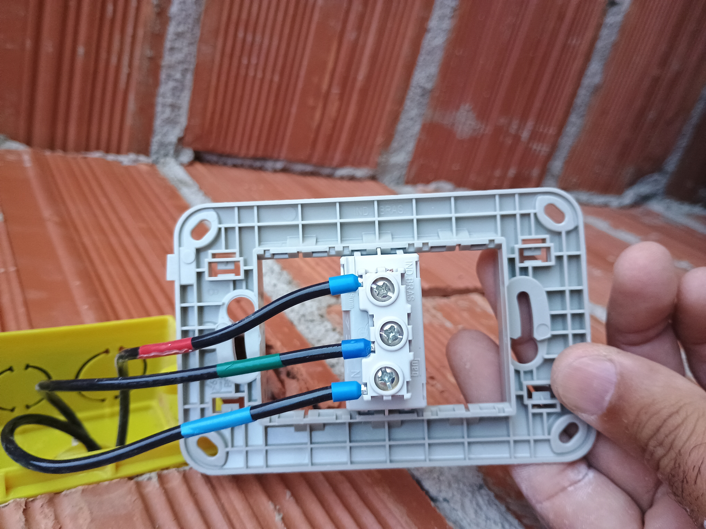
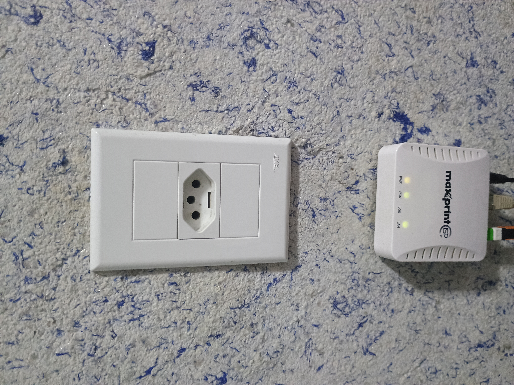
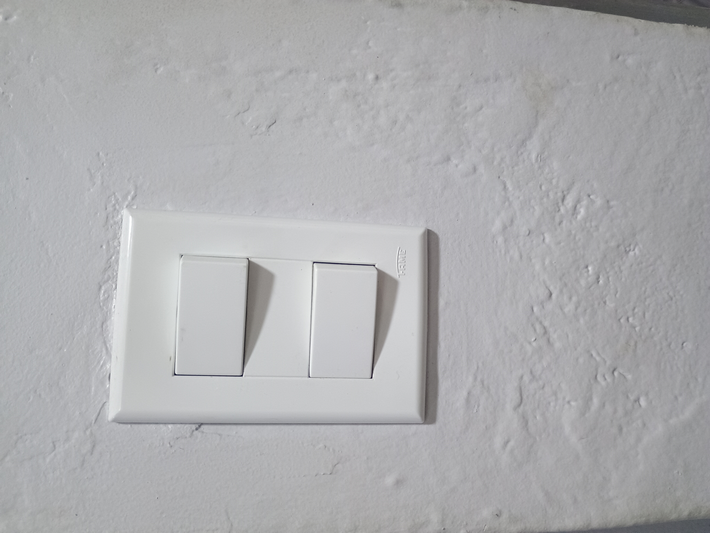

Instalação e Troca de Tomadas e Interruptores
Substituição de peças antigas ou danificadas, adequação ao novo padrão brasileiro e instalação de novos pontos de energia em locais estratégicos.
Ligação dos Condutores Ligação técnica dos cabos no módulo da tomada. |
Instalação Concluída Tomada finalizada e testada na parede. |
Interruptor Duplo Instalação de interruptor duplo com acabamento. |